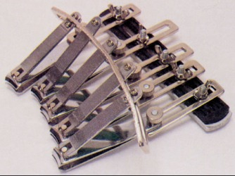

Japon icadi akordion/körük benzeri koltuk/kanepe/sandalye
Flexible Love from Nicholas Molnar on Vimeo.
|

|
|
|
Beþli
týrnak makasý!
|
Paspaslý
bebek tulumu!
|
|
|
|
|
|
|
Klipsli
kask
|
Parmaða
monteli diþ fýrçasý
|
Çift
taraflý giyilebilen terlik
|
Paspaslý
kedi terliði
|
Chindogu
hakkýnda:
Ciddiyeti hakkýnda çoðunuzun kuþku duyduðu bu icatlar, Japonya'da
"chindogu" diye bilinen bir akýmýn ürünleri.
Chindogu, baþlý baþýna bir felsefesi olan, üstüne kitaplar
yazýlmýþ, Japonya ve Amerika'da 'fan club'larý olan bir
hobi veya kimine göre sanat.
Chindogu'nun
en basit tanýmý, "ticarileþtirilemez icat artýklarý",
Chindogu'nun
ana felsefesi ise "unnecessity is the mother of all
inventions" þeklinde özetleniyor.
Chindogu,
bilimsel ve ticari "invention-innovation" çalýþmalarýna
anarþist bir yaklaþým getiriyor; çünkü buluþ yapmayý teþvik
ettiði söylenen patent, fikri hak gibi öðeleri reddediyor.
Chindogu
felsefesine uygun buluþlarýn taþýmasý gereken özellikler;
þeklinde
olup, þimdiye kadar hiçbir Chindogu için patent alýnmamýþ,
ancak birkaç icat, mucidi dýþýndakiler tarafýndan ticarileþtirilmiþtir.
Chindogu'nun
yaþayan efsanesi; Kenji Kawakami isimli 57 yaþýndaki bir
Japon olup, 600'ün üstünde Chindogu'ya imza atmýþtýr...
Kaynak: www.sistems.org/chindogu.htm
> Chindogu - Japon Zihni Sinir'i, Onur Ataoðlu
Ýlgili
Linkler: